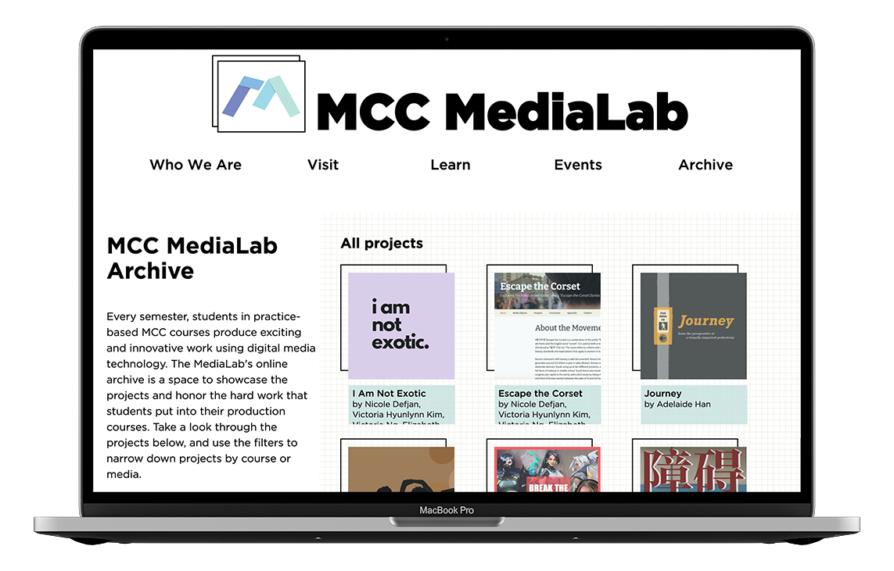

As a part of my role as a project assistant at Deutsches Haus at NYU, I oversaw strategy in event planning and optimized processes at all of its phases from communications with speakers to promotion to post-even management. That included building efficient workflows for obtaining speaker information and paying them for their services, re-imagining and simplifying visual design of promotional assets, and writing code to automate some processes.
> jump to the visual design work with flyers
Subtitle Editor script
<code id="java regex" date="jan2022"/>
see on github >
<code id="java regex" date="jan2022"/>
This code is intended to automatically fix some of the grammar, spelling, and capitalization
errors that the YouTube algorithm makes when automatically transcribing videos. The script relies
on Java I/O and RegEx string replacement.
Word replacement happens on the basis of a custom dictionary a person editing subtitles defines.
Therefore, after the script is run, some corrections still need to be done manually.
In total, thanks to this project, the process of transcription of event recordings was shortened by 60%, i.e.,
to twice the time of a video's length (as opposed to 5x time).
Structure of input
- SubtitlesParse.java
- captions.vtt (the .vtt format is a must!) that should be downloaded from YouTube Studio (automat generated captions)
Structure of the dictionary
.replace(“WORD_TO_REPLACE”, “REPLACEMENT_WORD”)
- GENERAL CORRECTIONS
- Grammar
- Academia terms
- Deutsches Haus-specific
- Deutsches Haus-specific names (aka names of the employees that come up in videos)
- Relevant geographic locations
- Month names
- VIDEO-SPECIFIC – should be deleted when starting a new video to avoid the clutter in the code. It is also recommended to separate this into categories.
Room for growth
In the future, I am hoping to build a node.js and React app that provides a UI to create a custom
dictionary, and then automatically run the script on automatically-generated YouTube captions without having
to download them.
It would also be amazing to one day connect the script to an NLP API that would fix common typos and
capitalize words automatically.
Flyer redesign
<visualDesign id="figma illustration" date="oct2021"/>
<visualDesign id="figma illustration" date="oct2021"/>
To increase the engagement with Deutsches Haus events, it was important to create cohesion in the look and feel of our promotional materials. As a designer, my main objective was to craft a visually compelling flyer while following existing brand standards and keeping the long-form promotional text readable.
The Process
The original version
Issues:
- Unbalanced (much heavier on top)
- A lot of white space between paragraphs
- Not print-friendly
First drafts
Idea basis:
- New York City skyline to signify the Deutsches Haus's connection to the city
- Perspective grid for a 3D effect of a "cityscape"
- Different shapes depending on the image direction (a "rising sun" half-circle shape was proposed for horizontal images).
- The Neue Haas Unica type was chosen because it is an easy-to-read sans-serif that is similar to Deutsches Haus's base font (Gotham) while having a distinct personality (elongated and thin) matching the rest of the flyer's visuals.
- Two-column text allows to take advantage of the horizontal space and to wrap text around logos at the bottom.
Second drafts
Idea basis:
The team liked the "connection to NYC" concept behind the first draft but wanted a more personalized look to illustrate that. Because of that, I decided to experiment with digital illustration to depict the Deutsches Haus's iconic windows, arch, and the "University Place" street sign.
Final version
Idea basis:
- The final iteration relied on the request to maintain illustrations of Deutsches Haus's elements but declutter and simplify the imagery.
- Black-and-whote illustration helped to divert attention from random parts of a flyer to an event-specific image in the top left.
- The simplified visuals also allowed for multiple flyers to not blend in with one another when hung up together.
- The updated positions of flyer elements (event image, title, QR code, illustrations, etc.) allowed for easy adjustments for any event (e.g., with a horizontal image, longer text, no QR code, etc.)
Similar projects

NPR design tokens
6-month research into the capabilities of design tokens and an implementation on npr.org learn more >

NYU MediaLab
webpages I have designed, prototyped, developed and/or maintained as a lead web developer of the MediaLab Team at NYU learn more >